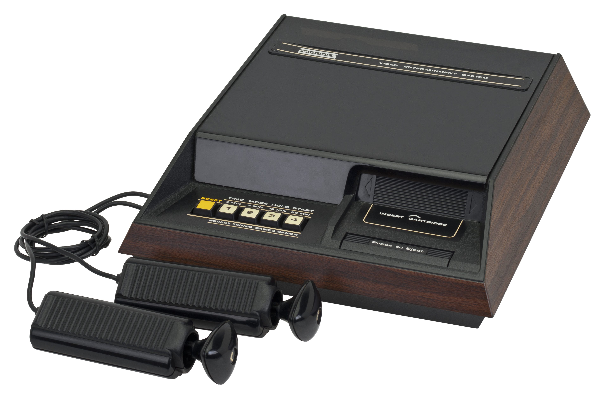

The Knob That Was Three Controllers
On the first microprocessor cartridge console, a single base-less pistol grip held three input grammars in one hand — an 8-way joystick, a twist that became a paddle, and a push-pull fire button. The same wrist motion did different work from one game to the next.

Think about how much of a game console's identity lives in a single thing you turn. The channel, the volume, the dial you grew up watching adults argue over. Fairchild's Channel F took that idea and squeezed it down to a twist of the thumb inside a plastic grip — and turned one knob into the whole machine's voice: an 8-way joystick, a paddle, and a fire button, all stacked in a single base-less pistol grip you held in one hand.
By 1976 nobody had done cartridge software yet, and almost nobody had done a hybrid controller. The Fairchild Channel F, the first home console to run on a microprocessor and the first to read games from ROM "Videocarts," is remembered for that software revolution. The hardware-engineering lead was Jerry Lawson, one of the few Black engineers in Silicon Valley and its first consumer-console lead — the man who, with Nicholas Talesfore and Ronald A. Smith, turned a prototype from Alpex ("Project RAVEN") into an $169.95 living-room machine. But the thing I keep coming back to is tucked inside the box, at the end of a 9-pin cable: a grip with no base to sit on, topped by a triangular cap that tilts in eight directions, twists left and right, and can be pushed down or pulled up. That's eight switch functions, and the only button you meet is the grip itself.
The genius is that the same gesture means different things depending on the world you're in. Twist the cap in the built-in Hockey and you re-angle your reflecting bar — the twist is your paddle's tilt. Load Videocart-9 Drag Race and the very same knob that steers the car is the one you twist to shift gears. No dedicated paddle, no dedicated shift lever, no fire button you hunt for at the wrong moment — one continuous motion, recruited fresh by each game. Different games, same wrist. That's context-dependent input, and it is the rarest interaction claim in the museum's console row. Our RCA Studio II gives you two telephone keypads screwed into the box, no joystick at all; the Coleco Telstar Arcade makes the whole wedge-shaped body your controller; the Intellivision needs a paper overlay to explain its keypad. Only the Channel F teaches you that a single rotary gesture can be borrowed and re-purposed from game to game — a proto-version of the mode-switching we now do without thinking, when thumbstick and trigger and shoulder each do double duty depending on the screen.
The Coleco Super Action Controller, seven years later, took a step beyond it: a thumb roller that spins continuously, an analog island in a digital sea. But its note makes the contrast explicit — the Channel F's twist-paddle still bottomed out into digital detents. Fairchild's knob was contacts under a cap, an either/or wearing the costume of an analog motion. The smooth continuity belonged to Coleco; the reuse, the one gesture with many masters, belonged to Fairchild. The twist that steers, the twist that shifts — that trick never left.
It didn't survive long. Fairchild sold the line to Zircon in 1979, and Zircon's System II swapped the twist-grip for conventional Atari-style DE-9 joysticks, quietly retiring the one knob that had done the work of three. By 1983 the Channel F was done, and its specific innovation — a rotary motion that re-purposed itself across games — had no direct heir. The push-twist-pull grammar remains, as far as I can tell, unreplicated by any later mass-market controller.
The first cartridge console changed what games were. Its controller changed what a hand did — and it did it with no buttons at all. You hold one knob, and it is simultaneously a joystick, a paddle, and a trigger, deciding which one to be based on where you are. I keep it for that: the strangest, quietest bet in early console design, that a twist of the thumb could mean anything, and would.